Agregační shlukování – Vývoj
Generace 0


Generace 1

Posun centroidů mezi generací 0 → 1:
- Shluk 0: 473.2990
- Shluk 1: 623.3948
- Shluk 2: 1062.5393
- Shluk 3: 873.4830
- Shluk 4: 448.0341
- Shluk 5: 749.3712
- Shluk 6: 683.3138
- Shluk 7: 1050.2716
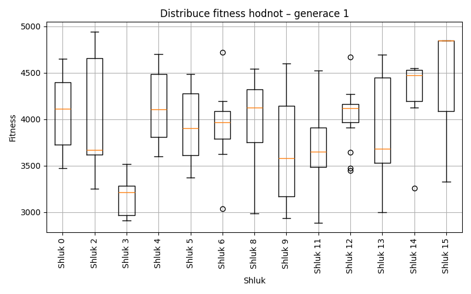
Generace 2
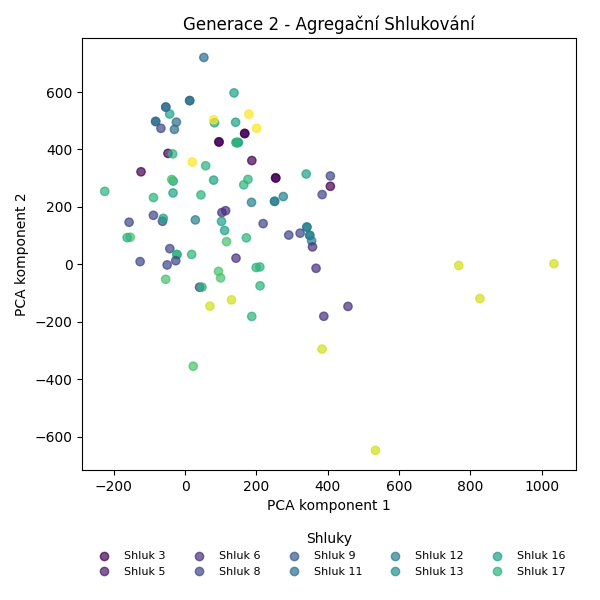
Posun centroidů mezi generací 1 → 2:
- Shluk 0: 467.1119
- Shluk 1: 581.1392
- Shluk 2: 827.7114
- Shluk 3: 788.9490
- Shluk 4: 687.3511
- Shluk 5: 1130.5120
- Shluk 6: 780.7043
- Shluk 7: 867.9079
Generace 3


Posun centroidů mezi generací 2 → 3:
- Shluk 0: 576.6997
- Shluk 1: 580.6847
- Shluk 2: 600.9651
- Shluk 3: 876.7797
- Shluk 4: 791.5067
- Shluk 5: 1143.9113
- Shluk 6: 510.3880

Generace 4
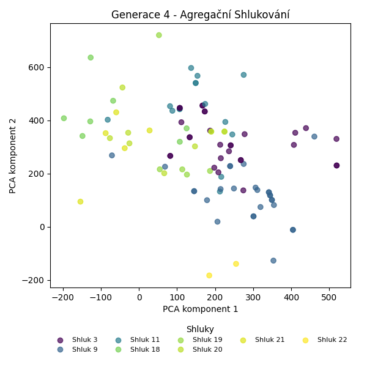

Posun centroidů mezi generací 3 → 4:
- Shluk 0: 536.7108
- Shluk 1: 517.6600
- Shluk 2: 591.3446
- Shluk 3: 599.1398
- Shluk 4: 764.6158
- Shluk 5: 1143.9113
- Shluk 6: 629.9752
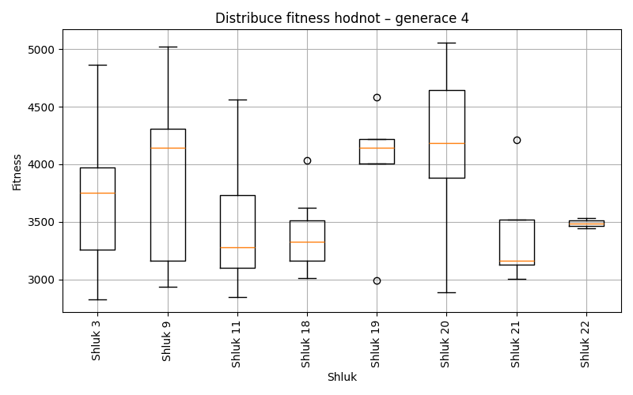
Generace 5

Posun centroidů mezi generací 4 → 5:
- Shluk 0: 567.6127
- Shluk 1: 850.3966
- Shluk 2: 546.6626
- Shluk 3: 607.1562
- Shluk 4: 403.5471
- Shluk 5: 1256.1651

Generace 6


Posun centroidů mezi generací 5 → 6:
- Shluk 0: 684.9442
- Shluk 1: 485.2229
- Shluk 2: 589.6513
- Shluk 3: 648.0359
- Shluk 4: 774.7171
- Shluk 5: 979.7375

Generace 7
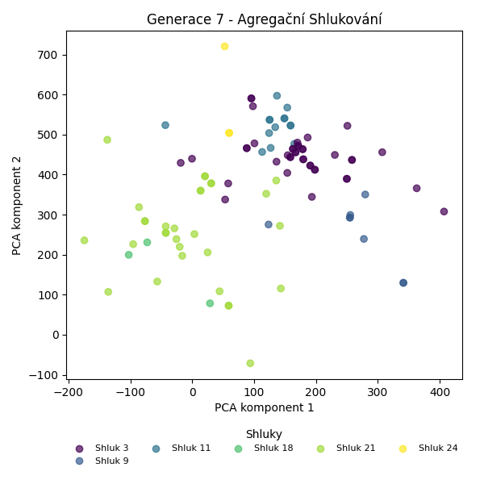

Posun centroidů mezi generací 6 → 7:
- Shluk 0: 650.4900
- Shluk 1: 414.8800
- Shluk 2: 657.4647
- Shluk 3: 230.8421
- Shluk 4: 914.4555
- Shluk 5: 283.5578

Generace 8


Posun centroidů mezi generací 7 → 8:
- Shluk 0: 309.6140
- Shluk 1: 271.0826
- Shluk 2: 268.7790
- Shluk 3: 709.7536
- Shluk 4: 1059.6095
- Shluk 5: 541.2170
Generace 9

Posun centroidů mezi generací 8 → 9:
- Shluk 0: 629.2152
- Shluk 1: 417.6058
- Shluk 2: 417.2384
- Shluk 3: 1088.4732
- Shluk 4: 914.7552
- Shluk 5: 845.6701

Generace 10


Posun centroidů mezi generací 9 → 10:
- Shluk 0: 603.1648
- Shluk 1: 853.5007
- Shluk 2: 800.4242
- Shluk 3: 566.9273
- Shluk 4: 931.6219
- Shluk 5: 576.3409
- Shluk 6: 867.3376
Generace 11
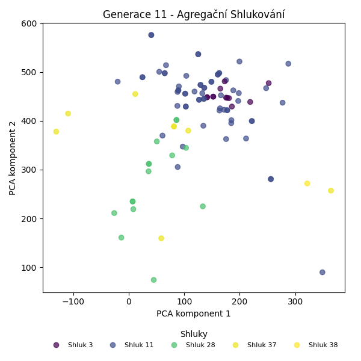
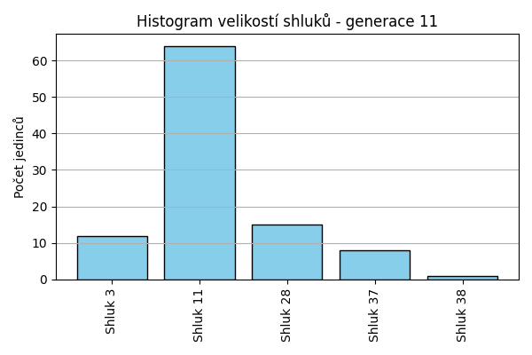
Posun centroidů mezi generací 10 → 11:
- Shluk 0: 652.9829
- Shluk 1: 909.5603
- Shluk 2: 772.5451
- Shluk 3: 649.1525
- Shluk 4: 757.6792
- Shluk 5: 789.4924
- Shluk 6: 1056.2880

Generace 12
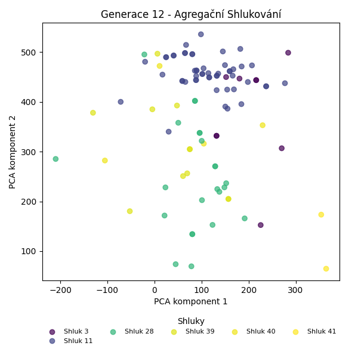

Posun centroidů mezi generací 11 → 12:
- Shluk 0: 676.4552
- Shluk 1: 834.1238
- Shluk 2: 1044.3818
- Shluk 3: 377.9039
- Shluk 4: 769.7734
- Shluk 5: 1208.6617

Generace 13
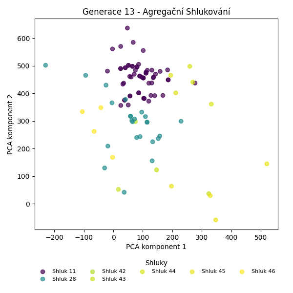
Posun centroidů mezi generací 12 → 13:
- Shluk 0: 334.6378
- Shluk 1: 1278.1721
- Shluk 2: 985.2068
- Shluk 3: 1164.2827
- Shluk 4: 951.6549
- Shluk 5: 1248.0339

Generace 14
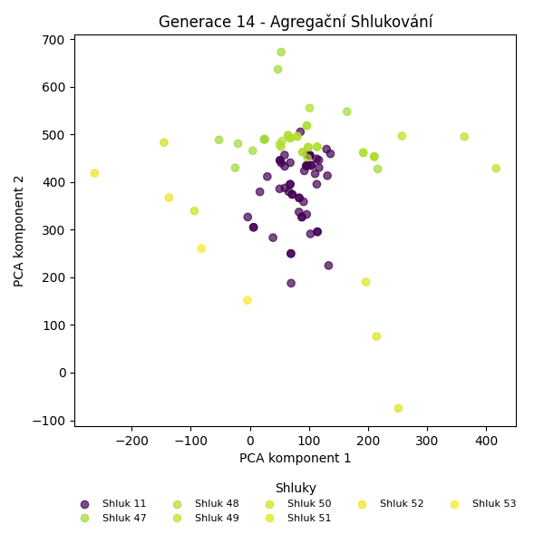

Posun centroidů mezi generací 13 → 14:
- Shluk 0: 575.5024
- Shluk 1: 755.8564
- Shluk 2: 319.7912
- Shluk 3: 974.6333
- Shluk 4: 1094.2238
- Shluk 5: 1346.7051

Generace 15
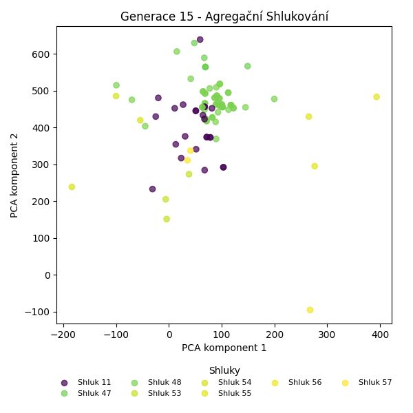
Posun centroidů mezi generací 14 → 15:
- Shluk 0: 127.5915
- Shluk 1: 406.8486
- Shluk 2: 320.3433
- Shluk 3: 423.6511
- Shluk 4: 278.0097
- Shluk 5: 1025.3741
Generace 16

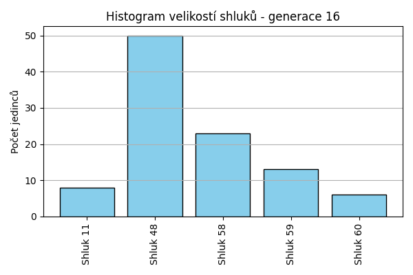
Posun centroidů mezi generací 15 → 16:
- Shluk 0: 202.9201
- Shluk 1: 478.3074
- Shluk 2: 753.6748
- Shluk 3: 1351.7079
- Shluk 4: 745.9178
- Shluk 5: 1364.9934

Generace 17

Posun centroidů mezi generací 16 → 17:
- Shluk 0: 199.9572
- Shluk 1: 629.5532
- Shluk 2: 596.0599
- Shluk 3: 1207.8358
- Shluk 4: 860.7754
- Shluk 5: 1340.1265
Generace 18

Posun centroidů mezi generací 17 → 18:
- Shluk 0: 151.8599
- Shluk 1: 1342.7444
- Shluk 2: 1314.4541
- Shluk 3: 810.6286
- Shluk 4: 127.5691

Generace 19


Posun centroidů mezi generací 18 → 19:
- Shluk 0: 154.9849
- Shluk 1: 403.1958
- Shluk 2: 73.9251
- Shluk 3: 836.4397

Generace 20


Posun centroidů mezi generací 19 → 20:
- Shluk 0: 452.4711
- Shluk 1: 727.2009
- Shluk 2: 1416.6515
- Shluk 3: 592.9070

Generace 21


Posun centroidů mezi generací 20 → 21:
- Shluk 0: 54.0078
- Shluk 1: 201.6713
- Shluk 2: 439.7145

Generace 22


Posun centroidů mezi generací 21 → 22:
- Shluk 0: 29.3971
- Shluk 1: 170.8577
- Shluk 2: 637.5408

Generace 23

Posun centroidů mezi generací 22 → 23:
- Shluk 0: 67.4966
- Shluk 1: 140.3957
- Shluk 2: 830.6300

Generace 24
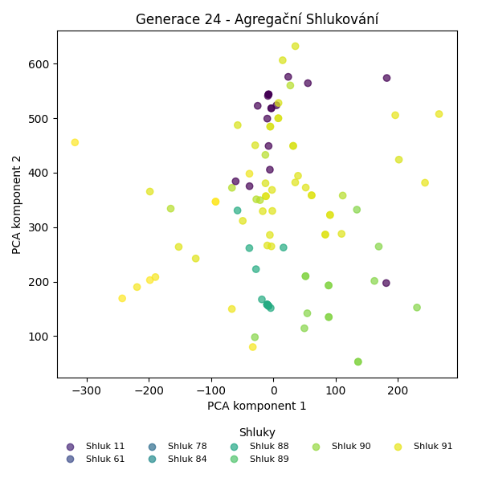

Posun centroidů mezi generací 23 → 24:
- Shluk 0: 747.7539
- Shluk 1: 881.2975
- Shluk 2: 298.9849
- Shluk 3: 555.0791
- Shluk 4: 666.8208
- Shluk 5: 1060.1188
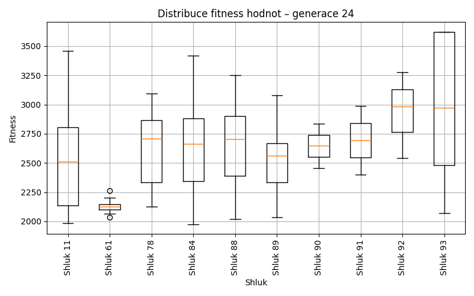
Generace 25


Posun centroidů mezi generací 24 → 25:
- Shluk 0: 783.9448
- Shluk 1: 637.5343
- Shluk 2: 440.8512
- Shluk 3: 636.7669
- Shluk 4: 777.8918
- Shluk 5: 840.0198

Generace 26

Posun centroidů mezi generací 25 → 26:
- Shluk 0: 566.6851
- Shluk 1: 806.7182
- Shluk 2: 59.0338
- Shluk 3: 738.2349
- Shluk 4: 816.7365
- Shluk 5: 680.2670
- Shluk 6: 620.3251

Generace 27


Posun centroidů mezi generací 26 → 27:
- Shluk 0: 486.4582
- Shluk 1: 211.5439
- Shluk 2: 17.0038
- Shluk 3: 659.2078
- Shluk 4: 610.2920
- Shluk 5: 794.1609
- Shluk 6: 541.5595
- Shluk 7: 789.1648

Generace 28


Posun centroidů mezi generací 27 → 28:
- Shluk 0: 317.5651
- Shluk 1: 657.2807
- Shluk 2: 301.1796
- Shluk 3: 792.6764
- Shluk 4: 555.2678
- Shluk 5: 771.9867
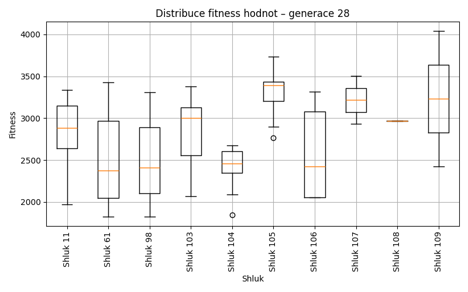
Generace 29


Posun centroidů mezi generací 28 → 29:
- Shluk 0: 34.2981
- Shluk 1: 291.8763
- Shluk 2: 86.1759
- Shluk 3: 871.1007
- Shluk 4: 145.8310
- Shluk 5: 915.7631

Generace 30

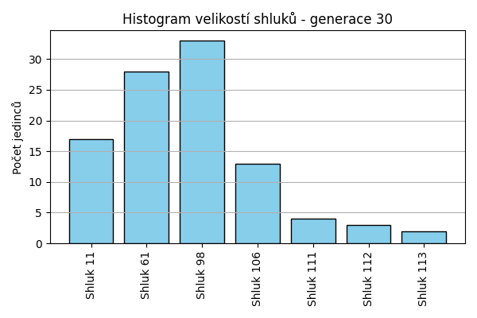
Posun centroidů mezi generací 29 → 30:
- Shluk 0: 45.0127
- Shluk 1: 288.0365
- Shluk 2: 613.8877
- Shluk 3: 700.5015
- Shluk 4: 761.3301

Generace 31

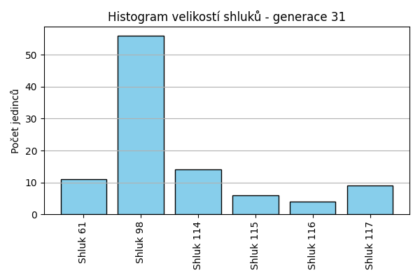
Posun centroidů mezi generací 30 → 31:
- Shluk 0: 31.8273
- Shluk 1: 80.4904
- Shluk 2: 852.7893
- Shluk 3: 1084.6069
- Shluk 4: 795.1269

Generace 32

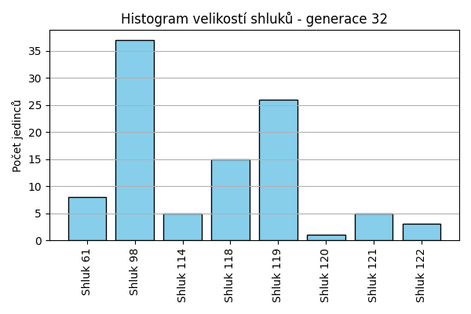
Posun centroidů mezi generací 31 → 32:
- Shluk 0: 45.2687
- Shluk 1: 113.8843
- Shluk 2: 859.9213
- Shluk 3: 647.4369
- Shluk 4: 899.6275
- Shluk 5: 754.3997
- Shluk 6: 1177.8774
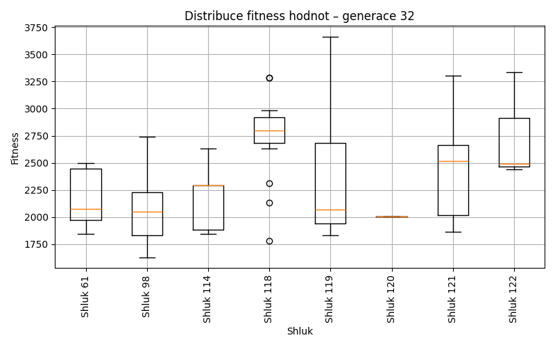
Generace 33

Posun centroidů mezi generací 32 → 33:
- Shluk 0: 40.9765
- Shluk 1: 79.6080
- Shluk 2: 1122.9232
- Shluk 3: 297.8536
- Shluk 4: 810.8671
- Shluk 5: 887.5965
- Shluk 6: 1153.2019
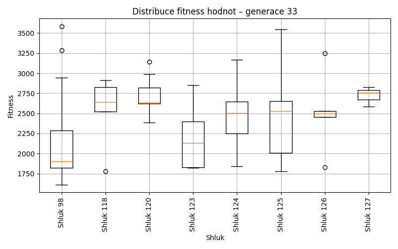
Generace 34
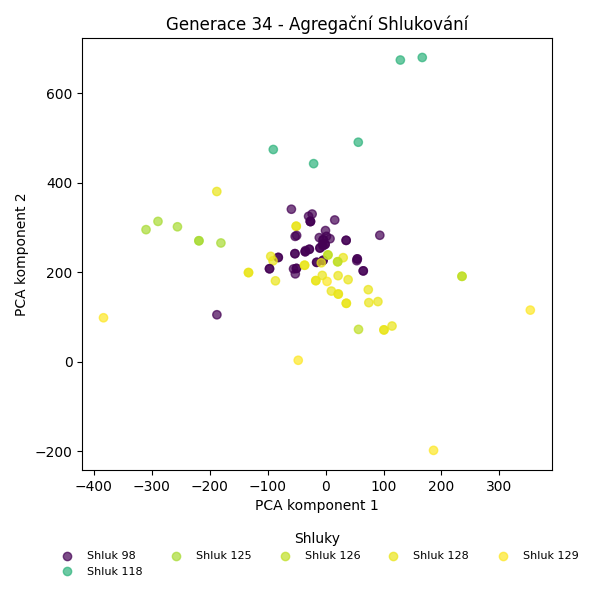
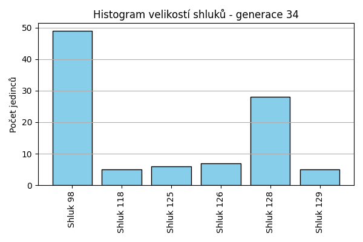
Posun centroidů mezi generací 33 → 34:
- Shluk 0: 75.8133
- Shluk 1: 623.7464
- Shluk 2: 1048.7270
- Shluk 3: 876.2901
- Shluk 4: 835.6684
- Shluk 5: 833.1980
- Shluk 6: 1100.3267
- Shluk 7: 875.3244
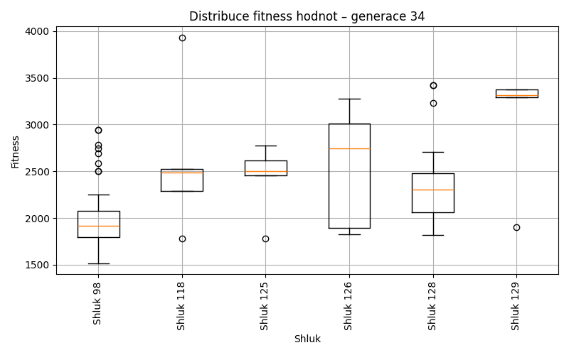
Generace 35
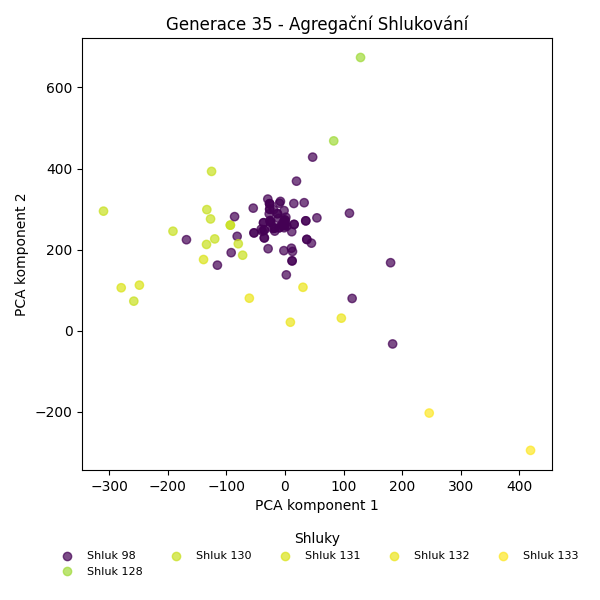

Posun centroidů mezi generací 34 → 35:
- Shluk 0: 49.7536
- Shluk 1: 682.6240
- Shluk 2: 712.9310
- Shluk 3: 744.6752
- Shluk 4: 837.7398
- Shluk 5: 1001.1591
- Shluk 6: 1078.2027
- Shluk 7: 1049.7639
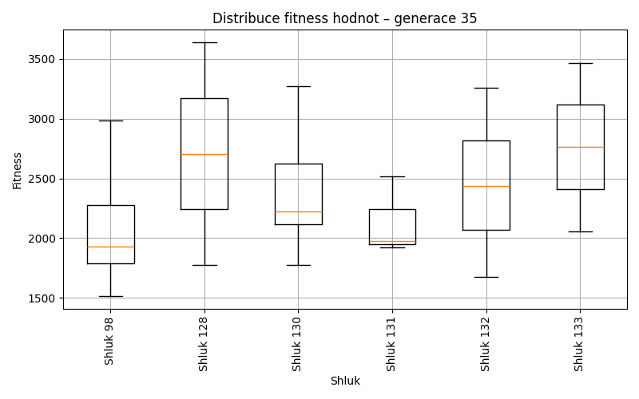
Generace 36

Posun centroidů mezi generací 35 → 36:
- Shluk 0: 420.8075
- Shluk 1: 501.0228
- Shluk 2: 969.1484
- Shluk 3: 679.7364
- Shluk 4: 688.9132
- Shluk 5: 1091.6884

Generace 37


Posun centroidů mezi generací 36 → 37:
- Shluk 0: 417.2149
- Shluk 1: 386.7381
- Shluk 2: 163.1220
- Shluk 3: 986.9439
- Shluk 4: 1098.3579

Generace 38
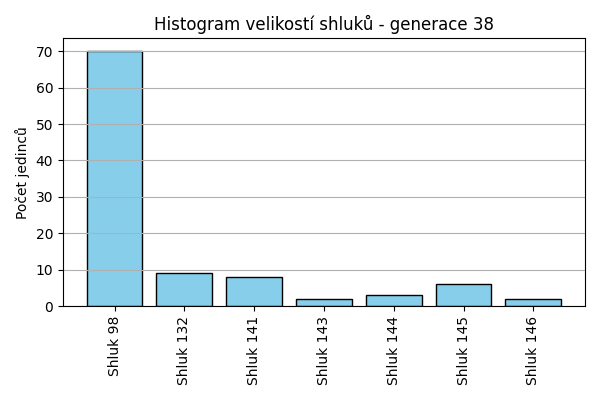
Posun centroidů mezi generací 37 → 38:
- Shluk 0: 31.9130
- Shluk 1: 547.7030
- Shluk 2: 975.1384
- Shluk 3: 919.3965
- Shluk 4: 1112.6912
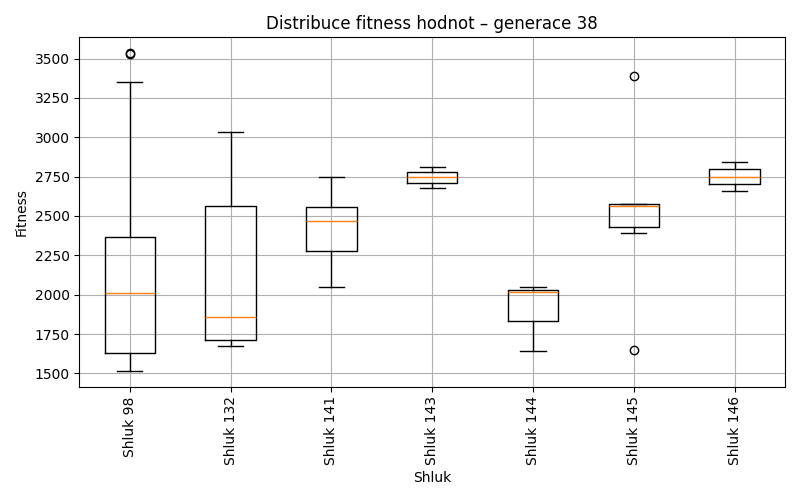
Generace 39


Posun centroidů mezi generací 38 → 39:
- Shluk 0: 333.7740
- Shluk 1: 703.6002
- Shluk 2: 746.3813
- Shluk 3: 142.1175
- Shluk 4: 740.6529
- Shluk 5: 614.3790
- Shluk 6: 549.3861
- Shluk 7: 1108.8340
Generace 40

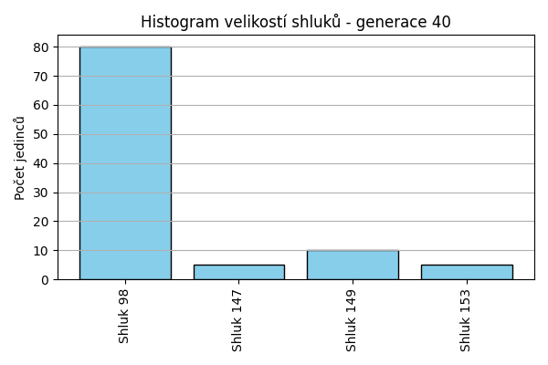
Posun centroidů mezi generací 39 → 40:
- Shluk 0: 410.6765
- Shluk 1: 953.1817
- Shluk 2: 646.8927
- Shluk 3: 429.6951
- Shluk 4: 67.3678
- Shluk 5: 850.6247
- Shluk 6: 944.0716
- Shluk 7: 1121.6169
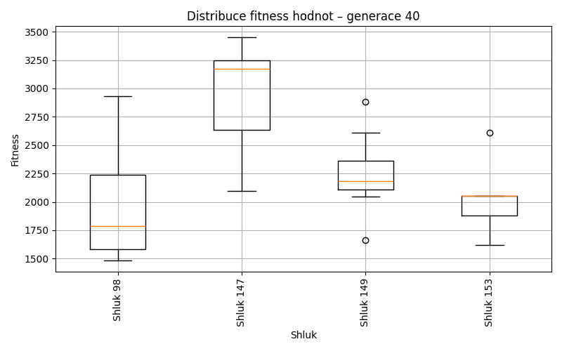
Generace 41
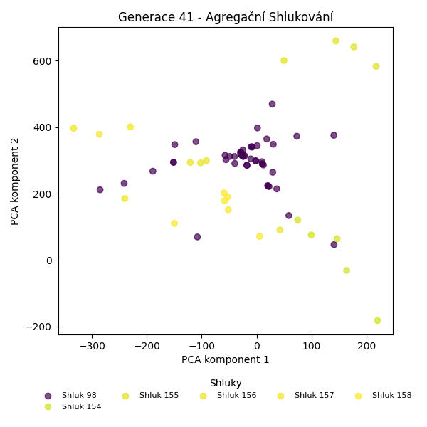
Posun centroidů mezi generací 40 → 41:
- Shluk 0: 271.1805
- Shluk 1: 798.1631
- Shluk 2: 643.7315
- Shluk 3: 1026.3664

Generace 42
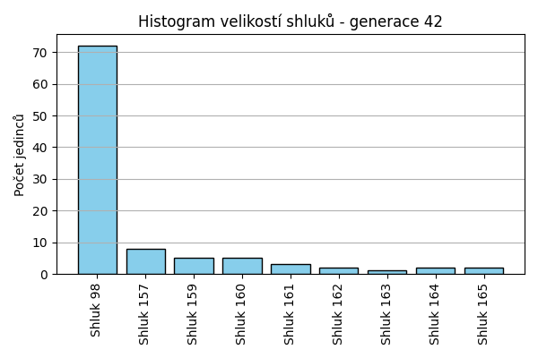
Posun centroidů mezi generací 41 → 42:
- Shluk 0: 381.1255
- Shluk 1: 477.5864
- Shluk 2: 70.1881
- Shluk 3: 1319.7044
Generace 43
Posun centroidů mezi generací 42 → 43:
- Shluk 0: 190.6513
- Shluk 1: 314.7483
- Shluk 2: 562.7920
- Shluk 3: 1066.7305
- Shluk 4: 922.1223
- Shluk 5: 932.2803
Generace 44


Posun centroidů mezi generací 43 → 44:
- Shluk 0: 439.7077
- Shluk 1: 30.5375
- Shluk 2: 825.7754
- Shluk 3: 949.2619
- Shluk 4: 636.1983
- Shluk 5: 1243.9340
Generace 45


Posun centroidů mezi generací 44 → 45:
- Shluk 0: 454.6236
- Shluk 1: 228.9685
- Shluk 2: 1064.3651
- Shluk 3: 715.6318
- Shluk 4: 665.1558
- Shluk 5: 935.6549
Generace 46


Posun centroidů mezi generací 45 → 46:
- Shluk 0: 401.1915
- Shluk 1: 189.4989
- Shluk 2: 1071.1482
- Shluk 3: 695.6470
- Shluk 4: 167.6131
- Shluk 5: 833.7526
- Shluk 6: 237.7791
- Shluk 7: 990.5979

Generace 47
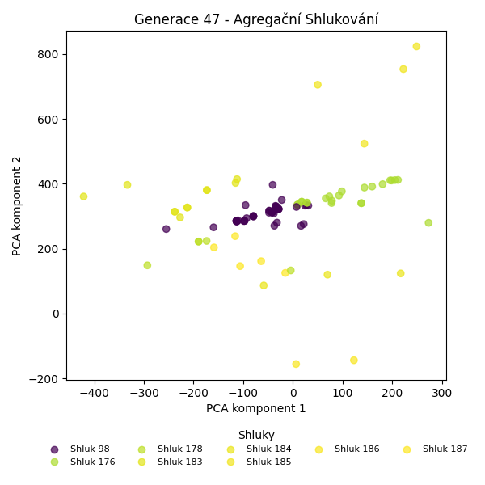
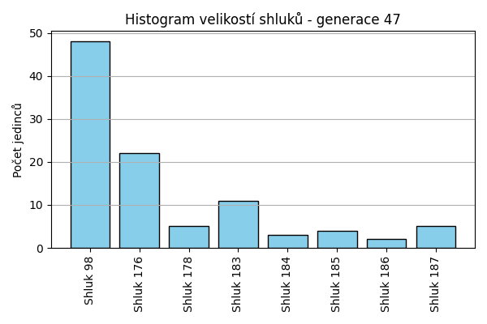
Posun centroidů mezi generací 46 → 47:
- Shluk 0: 283.8767
- Shluk 1: 64.5824
- Shluk 2: 586.6888
- Shluk 3: 874.6448
- Shluk 4: 670.3333
- Shluk 5: 823.4001
- Shluk 6: 844.2836
- Shluk 7: 357.4185

Generace 48

Posun centroidů mezi generací 47 → 48:
- Shluk 0: 89.7856
- Shluk 1: 60.8536
- Shluk 2: 105.8446
- Shluk 3: 747.7275
- Shluk 4: 274.6765
- Shluk 5: 557.6696
- Shluk 6: 789.6247
- Shluk 7: 1078.3754
Generace 49

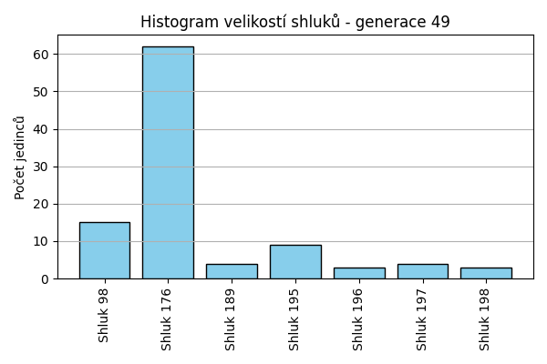
Posun centroidů mezi generací 48 → 49:
- Shluk 0: 614.3876
- Shluk 1: 544.3985
- Shluk 2: 705.8422
- Shluk 3: 51.1960

Generace 50

Posun centroidů mezi generací 49 → 50:
- Shluk 0: 555.9956
- Shluk 1: 499.2891
- Shluk 2: 773.1045
- Shluk 3: 449.2826

Generace 51

Posun centroidů mezi generací 50 → 51:
- Shluk 0: 437.3277
- Shluk 1: 99.4228
- Shluk 2: 378.5073
- Shluk 3: 723.4942
- Shluk 4: 886.1650
- Shluk 5: 1177.7350
- Shluk 6: 935.5317
Generace 52

Posun centroidů mezi generací 51 → 52:
- Shluk 0: 446.3177
- Shluk 1: 50.9995
- Shluk 2: 674.8787
- Shluk 3: 1085.6190
- Shluk 4: 640.3628
- Shluk 5: 711.0033
Generace 53


Posun centroidů mezi generací 52 → 53:
- Shluk 0: 732.1413
- Shluk 1: 615.2659
- Shluk 2: 644.4051
- Shluk 3: 1059.3464
- Shluk 4: 292.8289
- Shluk 5: 875.6798

Generace 54

Posun centroidů mezi generací 53 → 54:
- Shluk 0: 641.1034
- Shluk 1: 342.9814
- Shluk 2: 728.6967
- Shluk 3: 935.4039
- Shluk 4: 529.1656
- Shluk 5: 221.8093
- Shluk 6: 1273.9914
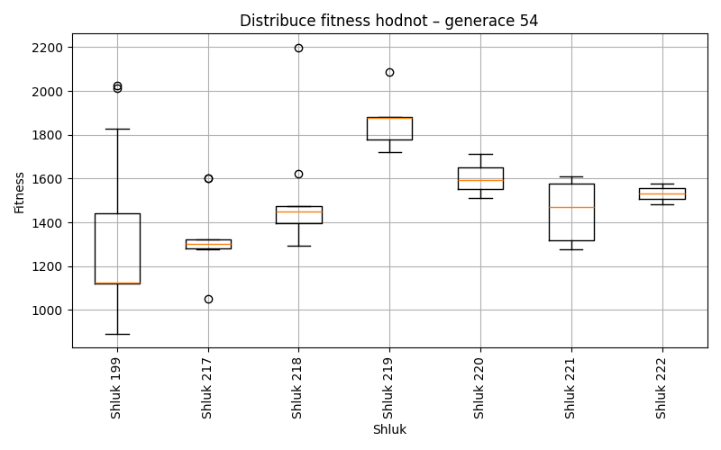
Generace 55
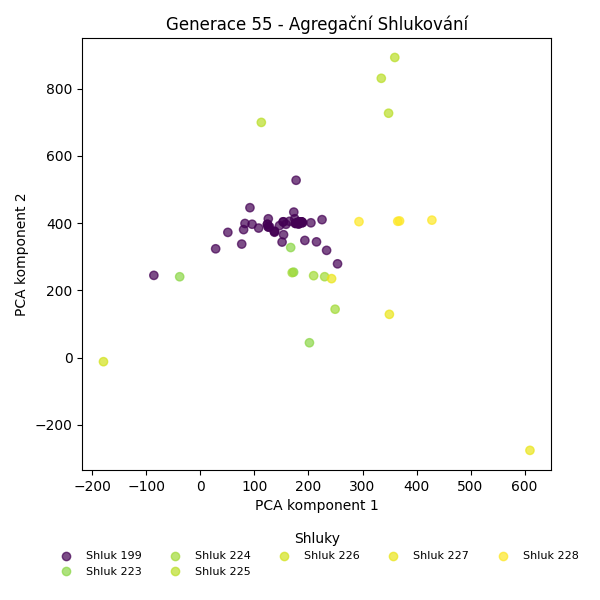

Posun centroidů mezi generací 54 → 55:
- Shluk 0: 139.4807
- Shluk 1: 680.4119
- Shluk 2: 833.2732
- Shluk 3: 361.5533
- Shluk 4: 500.5957
- Shluk 5: 891.6204
- Shluk 6: 1151.8100
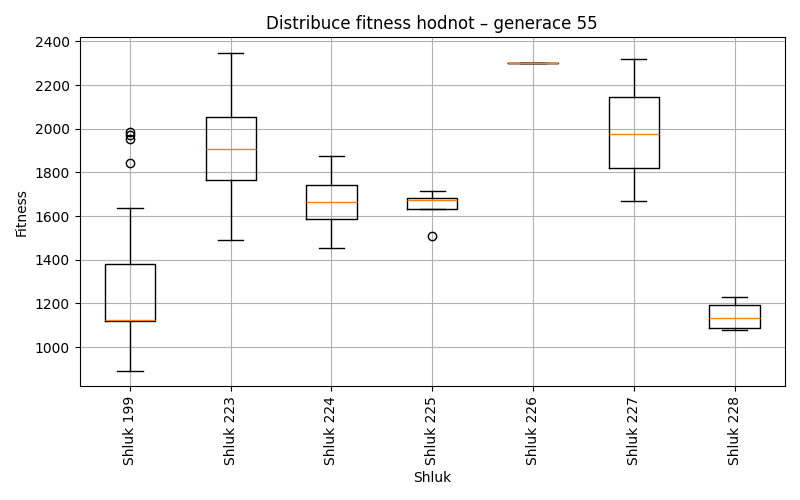
Generace 56
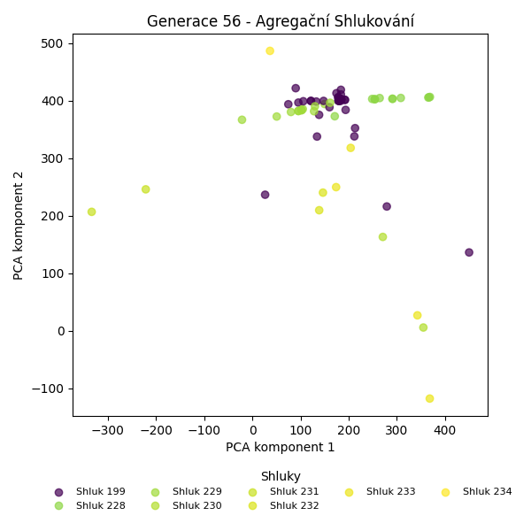

Posun centroidů mezi generací 55 → 56:
- Shluk 0: 198.6582
- Shluk 1: 952.3536
- Shluk 2: 303.1513
- Shluk 3: 764.3096
- Shluk 4: 578.6925
- Shluk 5: 651.0306

Generace 57


Posun centroidů mezi generací 56 → 57:
- Shluk 0: 522.9023
- Shluk 1: 922.3056
- Shluk 2: 300.0210
- Shluk 3: 763.0316
- Shluk 4: 1036.8409
- Shluk 5: 615.7906
Generace 58

Posun centroidů mezi generací 57 → 58:
- Shluk 0: 580.3150
- Shluk 1: 746.9598
- Shluk 2: 538.0675
- Shluk 3: 511.7165
- Shluk 4: 819.8089
- Shluk 5: 781.7156
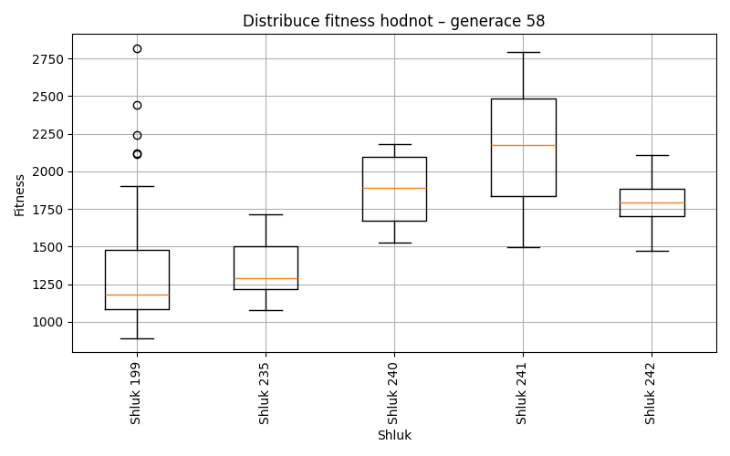
Generace 59

Posun centroidů mezi generací 58 → 59:
- Shluk 0: 89.9029
- Shluk 1: 417.5457
- Shluk 2: 699.6082
- Shluk 3: 863.4939
- Shluk 4: 457.7834
- Shluk 5: 738.8283

Generace 60

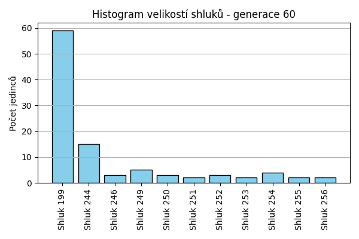
Posun centroidů mezi generací 59 → 60:
- Shluk 0: 84.4797
- Shluk 1: 434.4540
- Shluk 2: 513.3280
- Shluk 3: 817.7927
- Shluk 4: 658.4761
- Shluk 5: 1094.5500

Generace 61


Posun centroidů mezi generací 60 → 61:
- Shluk 0: 284.4251
- Shluk 1: 521.4234
- Shluk 2: 912.8042
- Shluk 3: 679.6954
- Shluk 4: 806.7871
- Shluk 5: 1118.5564
Generace 62
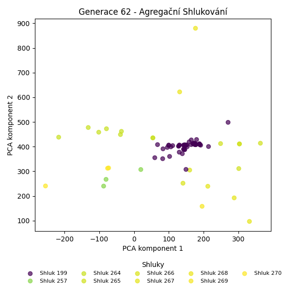

Posun centroidů mezi generací 61 → 62:
- Shluk 0: 308.0190
- Shluk 1: 716.0114
- Shluk 2: 1064.7925
- Shluk 3: 921.7583
- Shluk 4: 843.9016

Generace 63

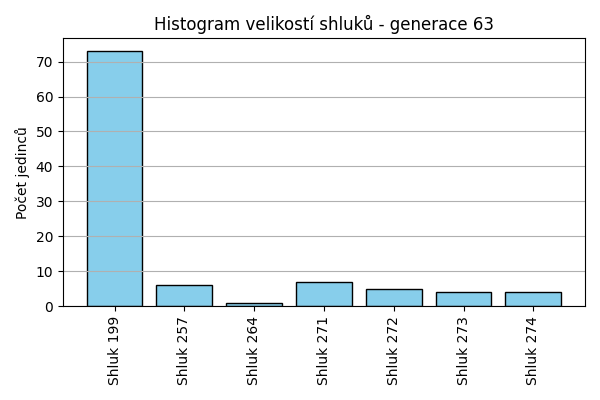
Posun centroidů mezi generací 62 → 63:
- Shluk 0: 25.3162
- Shluk 1: 678.4569
- Shluk 2: 878.3297
- Shluk 3: 1046.7448
- Shluk 4: 787.0641
Generace 64
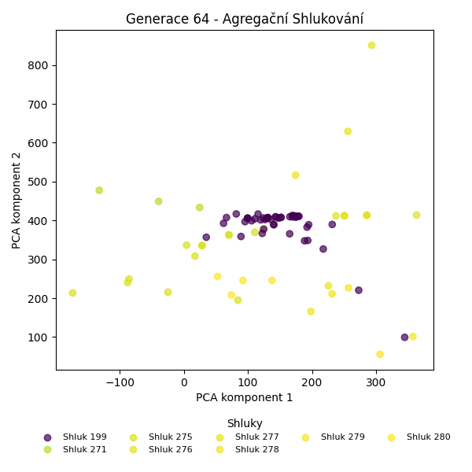

Posun centroidů mezi generací 63 → 64:
- Shluk 0: 13.5872
- Shluk 1: 718.4884
- Shluk 2: 752.1275
- Shluk 3: 1139.1869

Generace 65


Posun centroidů mezi generací 64 → 65:
- Shluk 0: 315.3196
- Shluk 1: 84.3242
- Shluk 2: 614.3917
- Shluk 3: 974.3606

Generace 66

Posun centroidů mezi generací 65 → 66:
- Shluk 0: 71.9755
- Shluk 1: 474.3355
- Shluk 2: 595.6616
- Shluk 3: 413.2752
- Shluk 4: 910.5601
- Shluk 5: 1209.4094
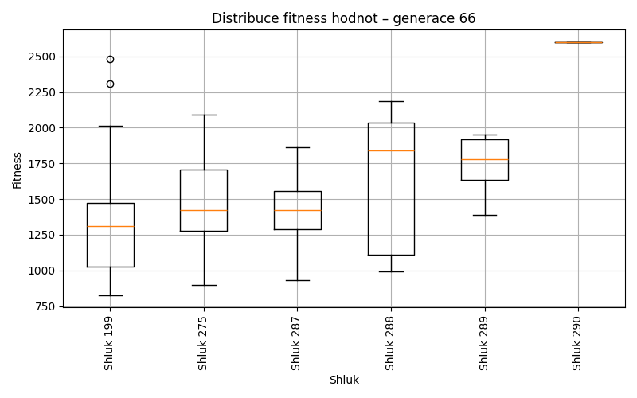
Generace 67

Posun centroidů mezi generací 66 → 67:
- Shluk 0: 577.1637
- Shluk 1: 29.4917
- Shluk 2: 825.2503
- Shluk 3: 966.5009
- Shluk 4: 680.0347

Generace 68
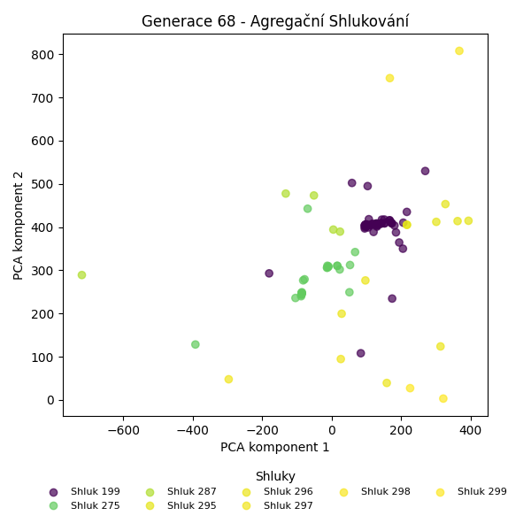
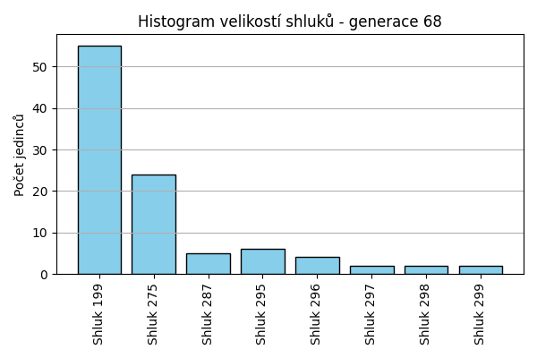
Posun centroidů mezi generací 67 → 68:
- Shluk 0: 541.7389
- Shluk 1: 25.7981
- Shluk 2: 992.2048
- Shluk 3: 884.4412
- Shluk 4: 193.3616

Generace 69

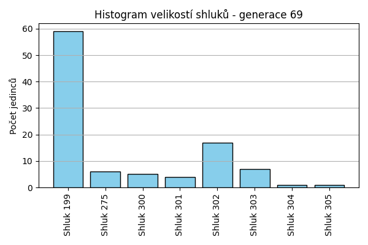
Posun centroidů mezi generací 68 → 69:
- Shluk 0: 225.6222
- Shluk 1: 391.1279
- Shluk 2: 954.7617
- Shluk 3: 1134.4092
- Shluk 4: 774.0876
- Shluk 5: 838.2159
Generace 70

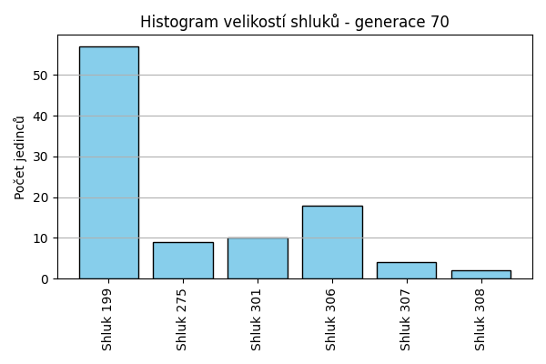
Posun centroidů mezi generací 69 → 70:
- Shluk 0: 77.5848
- Shluk 1: 417.3835
- Shluk 2: 917.5593
- Shluk 3: 958.6115
- Shluk 4: 887.9688
- Shluk 5: 938.4990

Generace 71
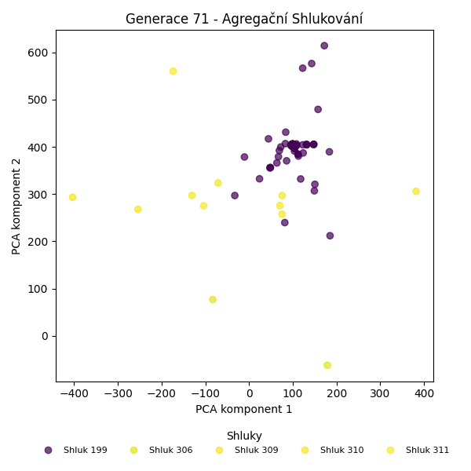

Posun centroidů mezi generací 70 → 71:
- Shluk 0: 439.6437
- Shluk 1: 490.8260
- Shluk 2: 486.1259
- Shluk 3: 1032.1341
- Shluk 4: 891.2052
- Shluk 5: 847.7109
- Shluk 6: 709.9546
- Shluk 7: 1006.8907

Generace 72

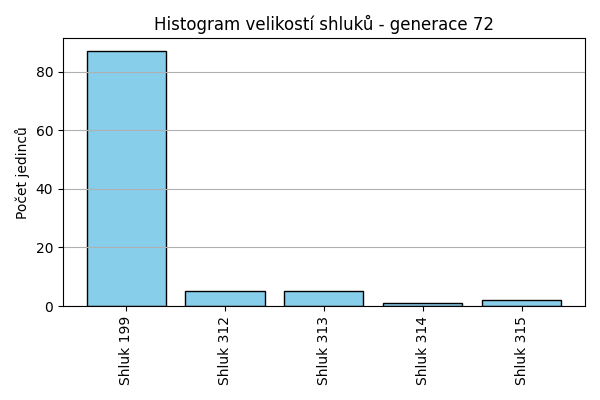
Posun centroidů mezi generací 71 → 72:
- Shluk 0: 114.3403
- Shluk 1: 285.9966
- Shluk 2: 463.9469
- Shluk 3: 1040.5970
- Shluk 4: 1031.3084
- Shluk 5: 405.6686
- Shluk 6: 662.2975
Generace 73

Posun centroidů mezi generací 72 → 73:
- Shluk 0: 124.3368
- Shluk 1: 268.7811
- Shluk 2: 842.6522
- Shluk 3: 499.9162
- Shluk 4: 340.7318
- Shluk 5: 586.0224

Generace 74
Posun centroidů mezi generací 73 → 74:
- Shluk 0: 451.5152
- Shluk 1: 672.1553
- Shluk 2: 845.4130
- Shluk 3: 107.4776
- Shluk 4: 889.5444
- Shluk 5: 676.8942

Generace 75

Posun centroidů mezi generací 74 → 75:
- Shluk 0: 112.7946
- Shluk 1: 680.7063
- Shluk 2: 483.0204
- Shluk 3: 738.4814
- Shluk 4: 881.1799
- Shluk 5: 625.0340
- Shluk 6: 88.3025
Generace 76

Posun centroidů mezi generací 75 → 76:
- Shluk 0: 641.4447
- Shluk 1: 569.2342
- Shluk 2: 467.8325
- Shluk 3: 740.3222
- Shluk 4: 189.6943
- Shluk 5: 351.0912
- Shluk 6: 868.4850
Generace 77

Posun centroidů mezi generací 76 → 77:
- Shluk 0: 531.0567
- Shluk 1: 453.9482
- Shluk 2: 695.1628
- Shluk 3: 569.2194
- Shluk 4: 776.2636
- Shluk 5: 786.0558
- Shluk 6: 954.5025
- Shluk 7: 684.0581
Generace 78


Posun centroidů mezi generací 77 → 78:
- Shluk 0: 496.1760
- Shluk 1: 648.3861
- Shluk 2: 868.2730
- Shluk 3: 355.8889
- Shluk 4: 726.3309
- Shluk 5: 1199.5103
- Shluk 6: 821.3493
- Shluk 7: 695.5178
Generace 79

Posun centroidů mezi generací 78 → 79:
- Shluk 0: 74.1895
- Shluk 1: 483.9081
- Shluk 2: 687.3700
- Shluk 3: 288.1459
- Shluk 4: 940.6241
- Shluk 5: 1078.6592

Generace 80

Posun centroidů mezi generací 79 → 80:
- Shluk 0: 558.4219
- Shluk 1: 387.5521
- Shluk 2: 1127.4790
- Shluk 3: 607.1803
- Shluk 4: 904.4584
- Shluk 5: 875.1012

Generace 81
Posun centroidů mezi generací 80 → 81:
- Shluk 0: 624.2209
- Shluk 1: 144.2647
- Shluk 2: 1182.1675
- Shluk 3: 857.3415
- Shluk 4: 600.5809
- Shluk 5: 792.8238
- Shluk 6: 754.9279
- Shluk 7: 843.4230

Generace 82

Posun centroidů mezi generací 81 → 82:
- Shluk 0: 707.0174
- Shluk 1: 843.9175
- Shluk 2: 594.3513
- Shluk 3: 406.9109
- Shluk 4: 795.9886
- Shluk 5: 887.7061
- Shluk 6: 805.0547
- Shluk 7: 744.2149

Generace 83

Posun centroidů mezi generací 82 → 83:
- Shluk 0: 422.9799
- Shluk 1: 590.2718
- Shluk 2: 233.7742
- Shluk 3: 421.7277
- Shluk 4: 1050.2385
- Shluk 5: 341.8826

Generace 84

Posun centroidů mezi generací 83 → 84:
- Shluk 0: 493.4423
- Shluk 1: 749.7618
- Shluk 2: 692.2580
- Shluk 3: 501.8872
- Shluk 4: 985.7309
- Shluk 5: 962.6745
Generace 85
Posun centroidů mezi generací 84 → 85:
- Shluk 0: 234.6134
- Shluk 1: 574.9350
- Shluk 2: 143.1194
- Shluk 3: 568.8016
- Shluk 4: 868.8196
- Shluk 5: 745.3289
- Shluk 6: 1003.1887
- Shluk 7: 809.5611
Generace 86

Posun centroidů mezi generací 85 → 86:
- Shluk 0: 601.8077
- Shluk 1: 288.8284
- Shluk 2: 678.5901
- Shluk 3: 279.3075
- Shluk 4: 1091.9519
- Shluk 5: 939.3551
- Shluk 6: 716.9058
- Shluk 7: 676.4196

Generace 87


Posun centroidů mezi generací 86 → 87:
- Shluk 0: 152.2213
- Shluk 1: 809.8997
- Shluk 2: 998.3669
- Shluk 3: 305.4265
- Shluk 4: 976.1074
- Shluk 5: 1089.0170
- Shluk 6: 43.3185
Generace 88

Posun centroidů mezi generací 87 → 88:
- Shluk 0: 144.5012
- Shluk 1: 461.9671
- Shluk 2: 761.9512
- Shluk 3: 697.8914
- Shluk 4: 492.1534
- Shluk 5: 993.4135

Generace 89


Posun centroidů mezi generací 88 → 89:
- Shluk 0: 660.8572
- Shluk 1: 722.8503
- Shluk 2: 112.0453
- Shluk 3: 889.1078
- Shluk 4: 247.1306
- Shluk 5: 681.5904

Generace 90

Posun centroidů mezi generací 89 → 90:
- Shluk 0: 36.7000
- Shluk 1: 1147.4818
- Shluk 2: 481.0967
- Shluk 3: 958.5923
- Shluk 4: 545.0401
- Shluk 5: 829.6263
- Shluk 6: 769.0710

Generace 91


Posun centroidů mezi generací 90 → 91:
- Shluk 0: 49.7779
- Shluk 1: 1081.3963
- Shluk 2: 759.5341
- Shluk 3: 920.9877
- Shluk 4: 770.6636
- Shluk 5: 803.9934

Generace 92

Posun centroidů mezi generací 91 → 92:
- Shluk 0: 496.4512
- Shluk 1: 479.2254
- Shluk 2: 899.6008
- Shluk 3: 893.1888
- Shluk 4: 863.5211

Generace 93
Posun centroidů mezi generací 92 → 93:
- Shluk 0: 497.7374
- Shluk 1: 414.5453
- Shluk 2: 904.4228
- Shluk 3: 964.0581
- Shluk 4: 814.6922

Generace 94

Posun centroidů mezi generací 93 → 94:
- Shluk 0: 589.3676
- Shluk 1: 406.9709
- Shluk 2: 660.9832
- Shluk 3: 1048.7576
- Shluk 4: 820.8861
- Shluk 5: 866.1811
Generace 95
Posun centroidů mezi generací 94 → 95:
- Shluk 0: 593.5556
- Shluk 1: 570.2203
- Shluk 2: 653.8228
- Shluk 3: 356.6341
- Shluk 4: 822.8427
- Shluk 5: 874.1706

Generace 96

Posun centroidů mezi generací 95 → 96:
- Shluk 0: 263.1751
- Shluk 1: 846.9708
- Shluk 2: 632.2962
- Shluk 3: 513.6634
- Shluk 4: 742.5998
- Shluk 5: 873.8369
- Shluk 6: 1079.9674
- Shluk 7: 853.0134
Generace 97

Posun centroidů mezi generací 96 → 97:
- Shluk 0: 274.3536
- Shluk 1: 679.7037
- Shluk 2: 822.4583
- Shluk 3: 496.6093
- Shluk 4: 887.4365
- Shluk 5: 836.2832
- Shluk 6: 1105.8993
- Shluk 7: 282.6304

Generace 98
Posun centroidů mezi generací 97 → 98:
- Shluk 0: 515.8995
- Shluk 1: 721.3115
- Shluk 2: 806.9664
- Shluk 3: 927.1131
- Shluk 4: 622.9967
- Shluk 5: 853.3054
- Shluk 6: 1005.5707

Generace 99

Posun centroidů mezi generací 98 → 99:
- Shluk 0: 503.7727
- Shluk 1: 861.1269
- Shluk 2: 461.0447
- Shluk 3: 957.1616
- Shluk 4: 873.3738
- Shluk 5: 528.6668
- Shluk 6: 409.9147

Generace 100

Posun centroidů mezi generací 99 → 100:
- Shluk 0: 43.1550
- Shluk 1: 514.7426
- Shluk 2: 824.5296
- Shluk 3: 1487.6144
- Shluk 4: 897.2163

Generace 101

Posun centroidů mezi generací 100 → 101:
- Shluk 0: 199.3288
- Shluk 1: 563.2907
- Shluk 2: 773.8074
- Shluk 3: 1428.4598
- Shluk 4: 951.6321

Generace 102

Posun centroidů mezi generací 101 → 102:
- Shluk 0: 73.4790
- Shluk 1: 651.4153
- Shluk 2: 598.9151
- Shluk 3: 1070.6192
- Shluk 4: 638.7768
Generace 103

Posun centroidů mezi generací 102 → 103:
- Shluk 0: 209.5901
- Shluk 1: 108.7385
- Shluk 2: 882.3656
- Shluk 3: 1145.3560
- Shluk 4: 758.4248

Generace 104


Posun centroidů mezi generací 103 → 104:
- Shluk 0: 189.4771
- Shluk 1: 833.7210
- Shluk 2: 1062.7026
- Shluk 3: 1004.2226
- Shluk 4: 3.2549

Generace 105
Posun centroidů mezi generací 104 → 105:
- Shluk 0: 512.6643
- Shluk 1: 922.8483
- Shluk 2: 727.7069
- Shluk 3: 977.0928
- Shluk 4: 792.9120
Generace 106

Posun centroidů mezi generací 105 → 106:
- Shluk 0: 268.8087
- Shluk 1: 452.9043
- Shluk 2: 453.1865
- Shluk 3: 882.5711
- Shluk 4: 763.2965
- Shluk 5: 885.7350

Generace 107


Posun centroidů mezi generací 106 → 107:
- Shluk 0: 524.0923
- Shluk 1: 351.4378
- Shluk 2: 516.8493
- Shluk 3: 527.5096
- Shluk 4: 747.1222
- Shluk 5: 845.8928
- Shluk 6: 1002.6378
- Shluk 7: 1060.4404
Generace 108


Posun centroidů mezi generací 107 → 108:
- Shluk 0: 505.7373
- Shluk 1: 543.6537
- Shluk 2: 470.7885
- Shluk 3: 300.2014
- Shluk 4: 974.6687
- Shluk 5: 864.6674
- Shluk 6: 1258.2512
Generace 109
Posun centroidů mezi generací 108 → 109:
- Shluk 0: 526.0138
- Shluk 1: 789.5200
- Shluk 2: 732.0781
- Shluk 3: 671.9752
- Shluk 4: 780.5565
- Shluk 5: 1001.4506
- Shluk 6: 1134.6685

Generace 110
Posun centroidů mezi generací 109 → 110:
- Shluk 0: 859.5247
- Shluk 1: 835.5038
- Shluk 2: 729.5094
- Shluk 3: 861.7402
- Shluk 4: 678.3096
- Shluk 5: 957.8247
- Shluk 6: 824.2388

Generace 111
Posun centroidů mezi generací 110 → 111:
- Shluk 0: 934.8319
- Shluk 1: 749.5813
- Shluk 2: 613.1347
- Shluk 3: 426.1548
- Shluk 4: 692.4763
- Shluk 5: 700.1286

Generace 112
Posun centroidů mezi generací 111 → 112:
- Shluk 0: 799.7867
- Shluk 1: 196.2102
- Shluk 2: 734.2252
- Shluk 3: 871.1709
- Shluk 4: 661.4615
- Shluk 5: 681.2625

Generace 113


Posun centroidů mezi generací 112 → 113:
- Shluk 0: 763.7980
- Shluk 1: 529.0669
- Shluk 2: 410.2245
- Shluk 3: 270.7912
- Shluk 4: 748.8665
- Shluk 5: 770.5299
- Shluk 6: 955.2305
- Shluk 7: 858.2855
Generace 114


Posun centroidů mezi generací 113 → 114:
- Shluk 0: 110.5219
- Shluk 1: 545.8535
- Shluk 2: 511.3810
- Shluk 3: 123.2515
- Shluk 4: 1008.8778
- Shluk 5: 968.4229
- Shluk 6: 1037.9007

Generace 115
Posun centroidů mezi generací 114 → 115:
- Shluk 0: 340.7271
- Shluk 1: 487.9878
- Shluk 2: 565.0341
- Shluk 3: 439.2859
- Shluk 4: 842.2401
- Shluk 5: 998.2491
- Shluk 6: 1018.2017
Generace 116

Posun centroidů mezi generací 115 → 116:
- Shluk 0: 42.3993
- Shluk 1: 733.1726
- Shluk 2: 704.9400
- Shluk 3: 769.1814
- Shluk 4: 552.5152
- Shluk 5: 948.1694
- Shluk 6: 964.2849
Generace 117

Posun centroidů mezi generací 116 → 117:
- Shluk 0: 61.8901
- Shluk 1: 807.5908
- Shluk 2: 929.2772
- Shluk 3: 934.2214
- Shluk 4: 240.1695
- Shluk 5: 850.7282
- Shluk 6: 821.8631
Generace 118
Posun centroidů mezi generací 117 → 118:
- Shluk 0: 517.9556
- Shluk 1: 887.4141
- Shluk 2: 669.1908
- Shluk 3: 738.6951
- Shluk 4: 853.0894
- Shluk 5: 676.1785
- Shluk 6: 854.3998

Generace 119

Posun centroidů mezi generací 118 → 119:
- Shluk 0: 565.4129
- Shluk 1: 587.2102
- Shluk 2: 389.8878
- Shluk 3: 587.7882
- Shluk 4: 994.2711
- Shluk 5: 480.9022
- Shluk 6: 1225.5221

Generace 120
Posun centroidů mezi generací 119 → 120:
- Shluk 0: 416.0224
- Shluk 1: 130.8204
- Shluk 2: 525.8417
- Shluk 3: 762.8660
- Shluk 4: 1060.0897
- Shluk 5: 818.0297
- Shluk 6: 1149.7474
Generace 121


Posun centroidů mezi generací 120 → 121:
- Shluk 0: 391.2019
- Shluk 1: 648.9045
- Shluk 2: 174.8189
- Shluk 3: 971.3797
- Shluk 4: 1073.6505
- Shluk 5: 1060.5186
- Shluk 6: 695.7296
Generace 122

Posun centroidů mezi generací 121 → 122:
- Shluk 0: 598.4701
- Shluk 1: 502.9688
- Shluk 2: 529.0054
- Shluk 3: 1049.0584
- Shluk 4: 918.1146
- Shluk 5: 818.5189
- Shluk 6: 782.7980
- Shluk 7: 784.4334

Generace 123
Posun centroidů mezi generací 122 → 123:
- Shluk 0: 539.6165
- Shluk 1: 518.4049
- Shluk 2: 805.0164
- Shluk 3: 965.0939
- Shluk 4: 558.0621
- Shluk 5: 1012.4979

Generace 124

Posun centroidů mezi generací 123 → 124:
- Shluk 0: 548.9883
- Shluk 1: 939.9468
- Shluk 2: 762.4167
- Shluk 3: 48.2250
- Shluk 4: 497.4741
- Shluk 5: 1087.9183
Generace 125


Posun centroidů mezi generací 124 → 125:
- Shluk 0: 414.7355
- Shluk 1: 1142.5702
- Shluk 2: 175.3950
- Shluk 3: 339.9418
- Shluk 4: 552.1591
- Shluk 5: 764.1768
- Shluk 6: 714.2515

Generace 126

Posun centroidů mezi generací 125 → 126:
- Shluk 0: 336.5276
- Shluk 1: 831.9994
- Shluk 2: 1004.4491
- Shluk 3: 495.1019
- Shluk 4: 835.2841
- Shluk 5: 866.5588
- Shluk 6: 801.0280

Generace 127

Posun centroidů mezi generací 126 → 127:
- Shluk 0: 352.9303
- Shluk 1: 612.5107
- Shluk 2: 804.9494
- Shluk 3: 590.7939
- Shluk 4: 354.1617
- Shluk 5: 1161.3334
- Shluk 6: 961.8255
- Shluk 7: 1082.9447
- Shluk 8: 1295.0328

Generace 128

Posun centroidů mezi generací 127 → 128:
- Shluk 0: 369.5537
- Shluk 1: 588.2031
- Shluk 2: 464.3104
- Shluk 3: 961.9932
- Shluk 4: 902.0812
- Shluk 5: 1011.3063
Generace 129


Posun centroidů mezi generací 128 → 129:
- Shluk 0: 307.3037
- Shluk 1: 507.4875
- Shluk 2: 401.4514
- Shluk 3: 1151.6938
- Shluk 4: 548.2731
- Shluk 5: 946.0653
Generace 130

Posun centroidů mezi generací 129 → 130:
- Shluk 0: 32.1849
- Shluk 1: 788.4918
- Shluk 2: 542.9308
- Shluk 3: 395.2088
- Shluk 4: 725.2311
- Shluk 5: 1005.5934
- Shluk 6: 743.4103

Generace 131


Posun centroidů mezi generací 130 → 131:
- Shluk 0: 41.9846
- Shluk 1: 224.5676
- Shluk 2: 637.9114
- Shluk 3: 1034.4006

Generace 132
Posun centroidů mezi generací 131 → 132:
- Shluk 0: 45.0651
- Shluk 1: 779.5209
- Shluk 2: 806.1467
- Shluk 3: 1259.2063
Generace 133


Posun centroidů mezi generací 132 → 133:
- Shluk 0: 15.9539
- Shluk 1: 728.5058
- Shluk 2: 713.3184
- Shluk 3: 926.3541
- Shluk 4: 378.8012
- Shluk 5: 1002.2198
- Shluk 6: 185.9591
Generace 134

Posun centroidů mezi generací 133 → 134:
- Shluk 0: 18.9872
- Shluk 1: 115.7015
- Shluk 2: 428.9519
- Shluk 3: 245.1647
- Shluk 4: 885.4439
- Shluk 5: 1016.5616

Generace 135

Posun centroidů mezi generací 134 → 135:
- Shluk 0: 430.5195
- Shluk 1: 370.2313
- Shluk 2: 790.0689
- Shluk 3: 1121.3012
- Shluk 4: 1040.8566
- Shluk 5: 797.1740
Generace 136

Posun centroidů mezi generací 135 → 136:
- Shluk 0: 432.5920
- Shluk 1: 450.0488
- Shluk 2: 806.0203
- Shluk 3: 887.1139
- Shluk 4: 948.6151
- Shluk 5: 950.1875

Generace 137

Posun centroidů mezi generací 136 → 137:
- Shluk 0: 577.7799
- Shluk 1: 578.9888
- Shluk 2: 876.7622
- Shluk 3: 692.8869
- Shluk 4: 1080.4850
- Shluk 5: 721.9063
Generace 138


Posun centroidů mezi generací 137 → 138:
- Shluk 0: 612.9271
- Shluk 1: 391.1966
- Shluk 2: 50.0866
- Shluk 3: 738.2034
- Shluk 4: 1198.0432
- Shluk 5: 708.1968

Generace 139


Posun centroidů mezi generací 138 → 139:
- Shluk 0: 657.4895
- Shluk 1: 705.6204
- Shluk 2: 645.8184
- Shluk 3: 979.3632
- Shluk 4: 798.1221
- Shluk 5: 705.9125
- Shluk 6: 848.6304
Generace 140

Posun centroidů mezi generací 139 → 140:
- Shluk 0: 491.0098
- Shluk 1: 915.8991
- Shluk 2: 951.4151
- Shluk 3: 1113.9505
- Shluk 4: 927.1666
- Shluk 5: 635.2814
- Shluk 6: 537.0125
Generace 141


Posun centroidů mezi generací 140 → 141:
- Shluk 0: 798.5785
- Shluk 1: 716.8492
- Shluk 2: 1015.9782
- Shluk 3: 686.6595
- Shluk 4: 822.9204
- Shluk 5: 651.0515
- Shluk 6: 39.2492

Generace 142


Posun centroidů mezi generací 141 → 142:
- Shluk 0: 816.0878
- Shluk 1: 515.1814
- Shluk 2: 603.7470
- Shluk 3: 808.8782
- Shluk 4: 768.3420
- Shluk 5: 717.2159
- Shluk 6: 748.7310

Generace 143

Posun centroidů mezi generací 142 → 143:
- Shluk 0: 819.6977
- Shluk 1: 633.1377
- Shluk 2: 71.7262
- Shluk 3: 817.7741
- Shluk 4: 796.0454
- Shluk 5: 929.6380
- Shluk 6: 974.5496
- Shluk 7: 848.8215
Generace 144

Posun centroidů mezi generací 143 → 144:
- Shluk 0: 851.4100
- Shluk 1: 583.8339
- Shluk 2: 517.4090
- Shluk 3: 498.7969
- Shluk 4: 532.7481
- Shluk 5: 147.7476
- Shluk 6: 1009.0486
- Shluk 7: 838.1724
- Shluk 8: 812.7464
Generace 145


Posun centroidů mezi generací 144 → 145:
- Shluk 0: 713.0520
- Shluk 1: 918.7426
- Shluk 2: 649.4064
- Shluk 3: 246.6726
- Shluk 4: 983.5339
- Shluk 5: 940.1853
- Shluk 6: 768.9604
- Shluk 7: 198.4386

Generace 146

Posun centroidů mezi generací 145 → 146:
- Shluk 0: 605.2727
- Shluk 1: 827.6073
- Shluk 2: 490.6000
- Shluk 3: 481.1634
- Shluk 4: 922.7443
- Shluk 5: 1006.3593
Generace 147

Posun centroidů mezi generací 146 → 147:
- Shluk 0: 274.3862
- Shluk 1: 852.8262
- Shluk 2: 500.2240
- Shluk 3: 733.3008
- Shluk 4: 1164.0984
- Shluk 5: 1044.7519

Generace 148

Posun centroidů mezi generací 147 → 148:
- Shluk 0: 41.2459
- Shluk 1: 707.5964
- Shluk 2: 747.3581
- Shluk 3: 823.1783
- Shluk 4: 1180.0963
- Shluk 5: 886.2881
- Shluk 6: 1089.2060
Generace 149

Posun centroidů mezi generací 148 → 149:
- Shluk 0: 29.3682
- Shluk 1: 693.0812
- Shluk 2: 698.6477
- Shluk 3: 1023.7237
- Shluk 4: 786.6575
- Shluk 5: 1294.4691
- Shluk 6: 883.8551
- Shluk 7: 750.6571

Generace 150

Posun centroidů mezi generací 149 → 150:
- Shluk 0: 527.5043
- Shluk 1: 640.2235
- Shluk 2: 931.8616
- Shluk 3: 1071.3387
- Shluk 4: 941.7649
- Shluk 5: 934.4573
- Shluk 6: 647.1242
Generace 151
Posun centroidů mezi generací 150 → 151:
- Shluk 0: 240.1729
- Shluk 1: 510.4987
- Shluk 2: 928.1615
- Shluk 3: 727.0457
- Shluk 4: 788.6146
- Shluk 5: 866.6852
- Shluk 6: 737.4098
Generace 152
Posun centroidů mezi generací 151 → 152:
- Shluk 0: 294.4669
- Shluk 1: 437.6182
- Shluk 2: 60.5065
- Shluk 3: 698.8004
- Shluk 4: 767.8980
- Shluk 5: 812.1492
- Shluk 6: 1050.7740
- Shluk 7: 963.7294

Generace 153

Posun centroidů mezi generací 152 → 153:
- Shluk 0: 641.9365
- Shluk 1: 562.5603
- Shluk 2: 497.8007
- Shluk 3: 742.8832
- Shluk 4: 619.5228
- Shluk 5: 263.8933
- Shluk 6: 969.2300
- Shluk 7: 990.1540

Generace 154


Posun centroidů mezi generací 153 → 154:
- Shluk 0: 596.2719
- Shluk 1: 464.0825
- Shluk 2: 527.6585
- Shluk 3: 1098.3243
- Shluk 4: 671.2149
- Shluk 5: 1017.1836
- Shluk 6: 941.7400
- Shluk 7: 949.9112
Generace 155

Posun centroidů mezi generací 154 → 155:
- Shluk 0: 507.1423
- Shluk 1: 647.5310
- Shluk 2: 756.4397
- Shluk 3: 904.9259
- Shluk 4: 955.9551
- Shluk 5: 742.4145
- Shluk 6: 788.8465
- Shluk 7: 1007.9374
- Shluk 8: 959.4855

Generace 156

Posun centroidů mezi generací 155 → 156:
- Shluk 0: 522.0909
- Shluk 1: 488.6992
- Shluk 2: 1093.8765
- Shluk 3: 327.4671
- Shluk 4: 1007.3590
- Shluk 5: 1089.2169
- Shluk 6: 454.2847

Generace 157

Posun centroidů mezi generací 156 → 157:
- Shluk 0: 340.5726
- Shluk 1: 676.0731
- Shluk 2: 1227.6284
- Shluk 3: 298.2030
- Shluk 4: 1019.1210
- Shluk 5: 1061.2436
- Shluk 6: 1027.5108
Generace 158


Posun centroidů mezi generací 157 → 158:
- Shluk 0: 624.8983
- Shluk 1: 725.5759
- Shluk 2: 805.4539
- Shluk 3: 159.7547
- Shluk 4: 856.6578
- Shluk 5: 237.2041
- Shluk 6: 1177.6060
- Shluk 7: 806.3318
Generace 159


Posun centroidů mezi generací 158 → 159:
- Shluk 0: 291.9127
- Shluk 1: 960.0299
- Shluk 2: 745.6351
- Shluk 3: 382.5953
- Shluk 4: 530.7094
- Shluk 5: 1078.1177
- Shluk 6: 757.5924
- Shluk 7: 650.7248
- Shluk 8: 1119.4292

Generace 160

Posun centroidů mezi generací 159 → 160:
- Shluk 0: 259.3574
- Shluk 1: 804.2536
- Shluk 2: 919.8545
- Shluk 3: 118.9626
- Shluk 4: 622.5132
Generace 161
Posun centroidů mezi generací 160 → 161:
- Shluk 0: 332.6321
- Shluk 1: 724.9770
- Shluk 2: 933.5110
- Shluk 3: 511.6919
- Shluk 4: 885.6256

Generace 162


Posun centroidů mezi generací 161 → 162:
- Shluk 0: 139.1734
- Shluk 1: 553.8629
- Shluk 2: 1156.4733
- Shluk 3: 727.3475
- Shluk 4: 769.9773
- Shluk 5: 570.9808

Generace 163
Posun centroidů mezi generací 162 → 163:
- Shluk 0: 393.5143
- Shluk 1: 764.9870
- Shluk 2: 1017.4147
- Shluk 3: 971.6018
- Shluk 4: 854.6601
- Shluk 5: 665.6418
Generace 164


Posun centroidů mezi generací 163 → 164:
- Shluk 0: 596.5948
- Shluk 1: 913.8278
- Shluk 2: 636.3127
- Shluk 3: 952.1383
- Shluk 4: 924.1960
- Shluk 5: 1010.9328

Generace 165

Posun centroidů mezi generací 164 → 165:
- Shluk 0: 464.3533
- Shluk 1: 479.2806
- Shluk 2: 670.1000
- Shluk 3: 837.4362
- Shluk 4: 603.2043
- Shluk 5: 1057.3515

Generace 166
Posun centroidů mezi generací 165 → 166:
- Shluk 0: 620.5666
- Shluk 1: 579.7292
- Shluk 2: 823.9476
- Shluk 3: 787.6150
- Shluk 4: 555.0911
- Shluk 5: 723.7846
Generace 167
Posun centroidů mezi generací 166 → 167:
- Shluk 0: 48.0114
- Shluk 1: 874.1932
- Shluk 2: 849.5191
- Shluk 3: 718.4258
- Shluk 4: 632.0215

Generace 168

Posun centroidů mezi generací 167 → 168:
- Shluk 0: 48.0029
- Shluk 1: 292.2846
- Shluk 2: 857.5313
- Shluk 3: 613.9958
- Shluk 4: 777.3033

Generace 169


Posun centroidů mezi generací 168 → 169:
- Shluk 0: 512.3302
- Shluk 1: 594.4545
- Shluk 2: 910.8453
- Shluk 3: 735.2799
- Shluk 4: 1031.9326
- Shluk 5: 817.6870
- Shluk 6: 1133.8402

Generace 170

Posun centroidů mezi generací 169 → 170:
- Shluk 0: 926.5146
- Shluk 1: 439.5757
- Shluk 2: 190.0333
- Shluk 3: 993.6688
- Shluk 4: 661.4348
- Shluk 5: 1372.1140
- Shluk 6: 19.7630

Generace 171
Posun centroidů mezi generací 170 → 171:
- Shluk 0: 862.0072
- Shluk 1: 748.6670
- Shluk 2: 745.7544
- Shluk 3: 1124.2658
- Shluk 4: 813.8526
- Shluk 5: 868.7950
- Shluk 6: 622.9555
Generace 172


Posun centroidů mezi generací 171 → 172:
- Shluk 0: 603.4719
- Shluk 1: 772.0630
- Shluk 2: 674.1421
- Shluk 3: 942.0446
- Shluk 4: 813.5265
- Shluk 5: 1100.9900
- Shluk 6: 557.1272
Generace 173

Posun centroidů mezi generací 172 → 173:
- Shluk 0: 628.9986
- Shluk 1: 461.4594
- Shluk 2: 1005.3215
- Shluk 3: 892.4384
- Shluk 4: 837.3792
Generace 174

Posun centroidů mezi generací 173 → 174:
- Shluk 0: 504.2456
- Shluk 1: 313.4945
- Shluk 2: 1231.9327
- Shluk 3: 914.4862
- Shluk 4: 1160.6019

Generace 175

Posun centroidů mezi generací 174 → 175:
- Shluk 0: 554.0635
- Shluk 1: 296.8710
- Shluk 2: 931.0175
- Shluk 3: 712.1915
- Shluk 4: 1077.2748
- Shluk 5: 806.0592
Generace 176

Posun centroidů mezi generací 175 → 176:
- Shluk 0: 546.9851
- Shluk 1: 292.3166
- Shluk 2: 616.5385
- Shluk 3: 77.3139
- Shluk 4: 818.0933
- Shluk 5: 951.9961
Generace 177
Posun centroidů mezi generací 176 → 177:
- Shluk 0: 388.6534
- Shluk 1: 426.7260
- Shluk 2: 880.3395
- Shluk 3: 455.9069
- Shluk 4: 809.8706
- Shluk 5: 659.8736

Generace 178
Posun centroidů mezi generací 177 → 178:
- Shluk 0: 96.7522
- Shluk 1: 35.3442
- Shluk 2: 1206.4047
- Shluk 3: 609.5750
- Shluk 4: 761.0307
- Shluk 5: 841.4028

Generace 179


Posun centroidů mezi generací 178 → 179:
- Shluk 0: 70.7419
- Shluk 1: 19.8481
- Shluk 2: 1029.8915
- Shluk 3: 1083.8421
- Shluk 4: 809.2066
- Shluk 5: 980.4692
- Shluk 6: 919.3125

Generace 180

Posun centroidů mezi generací 179 → 180:
- Shluk 0: 747.2449
- Shluk 1: 464.7824
- Shluk 2: 607.5961
- Shluk 3: 874.7688
- Shluk 4: 972.7503
- Shluk 5: 1035.1631
- Shluk 6: 905.5071
Generace 181


Posun centroidů mezi generací 180 → 181:
- Shluk 0: 691.6567
- Shluk 1: 275.0653
- Shluk 2: 766.9740
- Shluk 3: 876.0042
Generace 182

Posun centroidů mezi generací 181 → 182:
- Shluk 0: 381.2982
- Shluk 1: 278.6265
- Shluk 2: 372.4353
- Shluk 3: 934.2078

Generace 183

Posun centroidů mezi generací 182 → 183:
- Shluk 0: 378.4323
- Shluk 1: 969.8187
- Shluk 2: 781.5186
- Shluk 3: 955.1857
- Shluk 4: 785.7261

Generace 184

Posun centroidů mezi generací 183 → 184:
- Shluk 0: 454.6104
- Shluk 1: 773.7151
- Shluk 2: 981.3875
- Shluk 3: 1160.7141
- Shluk 4: 1078.3711
- Shluk 5: 1046.8621
Generace 185

Posun centroidů mezi generací 184 → 185:
- Shluk 0: 439.0053
- Shluk 1: 816.2036
- Shluk 2: 1026.4992
- Shluk 3: 971.1239
- Shluk 4: 964.0285

Generace 186

Posun centroidů mezi generací 185 → 186:
- Shluk 0: 14.9866
- Shluk 1: 919.6110
- Shluk 2: 917.8028
- Shluk 3: 946.1983
- Shluk 4: 808.7271

Generace 187

Posun centroidů mezi generací 186 → 187:
- Shluk 0: 20.4359
- Shluk 1: 859.5197
- Shluk 2: 995.4102
- Shluk 3: 1041.6394
- Shluk 4: 819.2495
- Shluk 5: 1070.8810
- Shluk 6: 1260.9898
Generace 188


Posun centroidů mezi generací 187 → 188:
- Shluk 0: 20.4246
- Shluk 1: 861.7868
- Shluk 2: 931.6428
- Shluk 3: 931.5347
- Shluk 4: 307.7612
- Shluk 5: 1247.9213
- Shluk 6: 1162.9026
Generace 189


Posun centroidů mezi generací 188 → 189:
- Shluk 0: 15.6884
- Shluk 1: 703.9578
- Shluk 2: 836.9186
- Shluk 3: 743.8685
- Shluk 4: 1206.3890
- Shluk 5: 1140.6193
Generace 190
Posun centroidů mezi generací 189 → 190:
- Shluk 0: 24.9723
- Shluk 1: 841.8422
- Shluk 2: 754.2721
- Shluk 3: 870.1109
- Shluk 4: 1201.4154
- Shluk 5: 1117.8160
Generace 191

Posun centroidů mezi generací 190 → 191:
- Shluk 0: 23.6481
- Shluk 1: 858.9786
- Shluk 2: 941.9633
- Shluk 3: 949.0339
- Shluk 4: 1091.7288
- Shluk 5: 957.2380
Generace 192

Posun centroidů mezi generací 191 → 192:
- Shluk 0: 18.5983
- Shluk 1: 860.7474
- Shluk 2: 1018.5480
- Shluk 3: 92.9951
- Shluk 4: 1024.2141
- Shluk 5: 1140.6791

Generace 193


Posun centroidů mezi generací 192 → 193:
- Shluk 0: 28.3987
- Shluk 1: 791.2440
- Shluk 2: 1117.8352
- Shluk 3: 877.8908
- Shluk 4: 1116.6552
- Shluk 5: 1057.5819
- Shluk 6: 1054.0596

Generace 194

Posun centroidů mezi generací 193 → 194:
- Shluk 0: 35.0968
- Shluk 1: 867.7176
- Shluk 2: 1298.2830
- Shluk 3: 967.7559
- Shluk 4: 1112.9828
- Shluk 5: 902.2064

Generace 195
Posun centroidů mezi generací 194 → 195:
- Shluk 0: 28.8508
- Shluk 1: 866.1083
- Shluk 2: 1114.6354
- Shluk 3: 1049.6858
- Shluk 4: 1163.2861
- Shluk 5: 1029.7505

Generace 196

Posun centroidů mezi generací 195 → 196:
- Shluk 0: 405.4033
- Shluk 1: 865.9992
- Shluk 2: 614.9165
- Shluk 3: 981.6072
- Shluk 4: 1186.2871
- Shluk 5: 979.4836
- Shluk 6: 725.1041

Generace 197


Posun centroidů mezi generací 196 → 197:
- Shluk 0: 407.5515
- Shluk 1: 927.8543
- Shluk 2: 579.3971
- Shluk 3: 1017.1735
- Shluk 4: 1111.0807
- Shluk 5: 871.2858
- Shluk 6: 1369.7170

Generace 198

Posun centroidů mezi generací 197 → 198:
- Shluk 0: 37.6090
- Shluk 1: 326.2360
- Shluk 2: 634.6801
- Shluk 3: 1121.0241
- Shluk 4: 1028.7955
- Shluk 5: 864.6866
- Shluk 6: 1297.4074
Generace 199

Posun centroidů mezi generací 198 → 199:
- Shluk 0: 407.0643
- Shluk 1: 671.6281
- Shluk 2: 990.7670
- Shluk 3: 1119.5316
- Shluk 4: 1004.0178
- Shluk 5: 1099.7881

Generace 200
Posun centroidů mezi generací 199 → 200:
- Shluk 0: 396.8893
- Shluk 1: 612.3297
- Shluk 2: 276.8500
- Shluk 3: 1007.9517
- Shluk 4: 856.2738
- Shluk 5: 1022.2066
Generace 201

Posun centroidů mezi generací 200 → 201:
- Shluk 0: 30.7267
- Shluk 1: 803.5764
- Shluk 2: 855.0744
- Shluk 3: 1005.6505
- Shluk 4: 737.2477
- Shluk 5: 766.4262

Generace 202


Posun centroidů mezi generací 201 → 202:
- Shluk 0: 30.6959
- Shluk 1: 887.7677
- Shluk 2: 905.7853
- Shluk 3: 935.7580
- Shluk 4: 956.8957
- Shluk 5: 927.9625

Generace 203


Posun centroidů mezi generací 202 → 203:
- Shluk 0: 37.6294
- Shluk 1: 1013.8703
- Shluk 2: 878.9444
- Shluk 3: 961.6104
- Shluk 4: 1447.0965
Generace 204


Posun centroidů mezi generací 203 → 204:
- Shluk 0: 500.9227
- Shluk 1: 947.9506
- Shluk 2: 420.9142
- Shluk 3: 1086.1673
- Shluk 4: 1354.0209

Generace 205


Posun centroidů mezi generací 204 → 205:
- Shluk 0: 556.9578
- Shluk 1: 761.1955
- Shluk 2: 24.4991
- Shluk 3: 876.1548
- Shluk 4: 707.3981
- Shluk 5: 1186.7958
Generace 206


Posun centroidů mezi generací 205 → 206:
- Shluk 0: 790.2019
- Shluk 1: 816.8918
- Shluk 2: 23.7994
- Shluk 3: 936.8622
- Shluk 4: 853.8707
- Shluk 5: 155.0936
Generace 207

Posun centroidů mezi generací 206 → 207:
- Shluk 0: 673.1407
- Shluk 1: 1033.2941
- Shluk 2: 23.4148
- Shluk 3: 1047.4215
- Shluk 4: 922.6071
- Shluk 5: 1050.7770

Generace 208


Posun centroidů mezi generací 207 → 208:
- Shluk 0: 473.6052
- Shluk 1: 1328.9758
- Shluk 2: 650.5969
- Shluk 3: 983.7513
- Shluk 4: 996.6051
- Shluk 5: 108.5520
- Shluk 6: 895.9909

Generace 209

Posun centroidů mezi generací 208 → 209:
- Shluk 0: 25.8513
- Shluk 1: 994.3987
- Shluk 2: 907.5430
- Shluk 3: 1058.0539
- Shluk 4: 1023.0661

Generace 210


Posun centroidů mezi generací 209 → 210:
- Shluk 0: 16.5102
- Shluk 1: 557.6641
- Shluk 2: 962.7936
- Shluk 3: 1011.4403
- Shluk 4: 1025.0663
Generace 211


Posun centroidů mezi generací 210 → 211:
- Shluk 0: 17.0616
- Shluk 1: 633.6059
- Shluk 2: 903.2125
- Shluk 3: 116.6324

Generace 212

Posun centroidů mezi generací 211 → 212:
- Shluk 0: 15.8985
- Shluk 1: 844.0778
- Shluk 2: 795.2288
- Shluk 3: 915.6038
Generace 213


Posun centroidů mezi generací 212 → 213:
- Shluk 0: 20.5782
- Shluk 1: 462.2424
- Shluk 2: 63.7449
- Shluk 3: 191.0327
- Shluk 4: 888.0855
- Shluk 5: 1041.2881

Generace 214

Posun centroidů mezi generací 213 → 214:
- Shluk 0: 16.1852
- Shluk 1: 1135.7718
- Shluk 2: 944.1264
- Shluk 3: 1015.7130
- Shluk 4: 967.2534
- Shluk 5: 1134.1746

Generace 215
Posun centroidů mezi generací 214 → 215:
- Shluk 0: 22.1409
- Shluk 1: 1100.9232
- Shluk 2: 902.2896
- Shluk 3: 87.5961
- Shluk 4: 1020.6330
- Shluk 5: 1175.8478

Generace 216

Posun centroidů mezi generací 215 → 216:
- Shluk 0: 12.3224
- Shluk 1: 1071.7074
- Shluk 2: 660.5444
- Shluk 3: 796.2764
- Shluk 4: 921.7749
- Shluk 5: 885.1934

Generace 217

Posun centroidů mezi generací 216 → 217:
- Shluk 0: 403.5551
- Shluk 1: 214.4678
- Shluk 2: 548.4989
- Shluk 3: 1006.7861
- Shluk 4: 950.2536
- Shluk 5: 1016.7578

Generace 218

Posun centroidů mezi generací 217 → 218:
- Shluk 0: 209.0211
- Shluk 1: 765.9817
- Shluk 2: 879.3244
- Shluk 3: 1008.5271
- Shluk 4: 891.7162
- Shluk 5: 905.9541
Generace 219

Posun centroidů mezi generací 218 → 219:
- Shluk 0: 355.3283
- Shluk 1: 598.3796
- Shluk 2: 629.1646
- Shluk 3: 1085.4527
- Shluk 4: 778.1691
- Shluk 5: 731.6356